File: 000390.gt.txt (if the image is defective, simply delete all Arabic text and the line will be excluded)
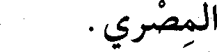
المصري.
File: 000391.gt.txt (if the image is defective, simply delete all Arabic text and the line will be excluded)
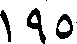
195
File: 000392.gt.txt (if the image is defective, simply delete all Arabic text and the line will be excluded)
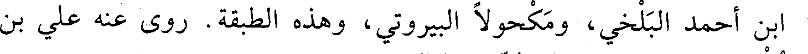
ابن أحمد البلخي، ومكحولا البيروتي، وهذه الطبقة. روى عنه علي
File: 000393.gt.txt (if the image is defective, simply delete all Arabic text and the line will be excluded)
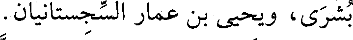
بن بشرى، ويحيى بن عمار السجستانيان.
File: 000394.gt.txt (if the image is defective, simply delete all Arabic text and the line will be excluded)
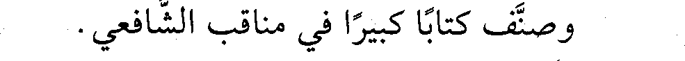
وصنف كتابا كبيرا في مناقب الشافعي.
File: 000395.gt.txt (if the image is defective, simply delete all Arabic text and the line will be excluded)
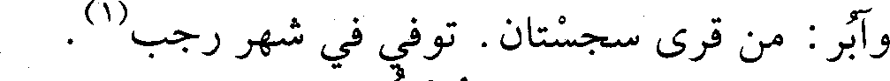
وآبر : من قرى سجستان. توفي في شهر رجب(1) .
File: 000396.gt.txt (if the image is defective, simply delete all Arabic text and the line will be excluded)
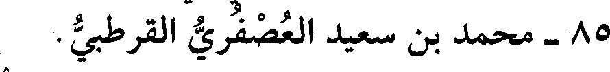
85 - محمد بن سعيد العصفري القرطبي.
File: 000397.gt.txt (if the image is defective, simply delete all Arabic text and the line will be excluded)
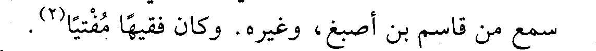
سمع من قاسم بن أصبغ، وغيره. وكان فقيها مفتيا(2) .
File: 000398.gt.txt (if the image is defective, simply delete all Arabic text and the line will be excluded)
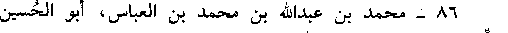
86 - محمد بن عبد الله بن محمد بن العباس، أبو الحسين
File: 000399.gt.txt (if the image is defective, simply delete all Arabic text and the line will be excluded)
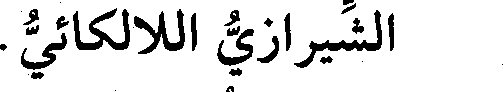
الشيرازي اللالكائي.
File: 000400.gt.txt (if the image is defective, simply delete all Arabic text and the line will be excluded)
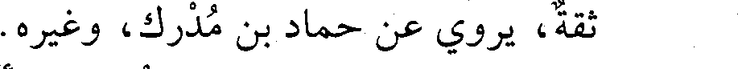
ثقة، يروي عن حماد بن مدرك، وغيره.
File: 000401.gt.txt (if the image is defective, simply delete all Arabic text and the line will be excluded)
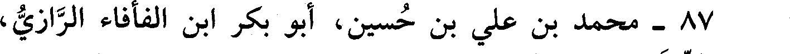
87 - محمد بن علي بن حسين، أبو بكر ابن الفأفاء الرازي،
File: 000402.gt.txt (if the image is defective, simply delete all Arabic text and the line will be excluded)
قاضي الدينور.
File: 000403.gt.txt (if the image is defective, simply delete all Arabic text and the line will be excluded)
حدث بهمذان سنة ثلاث وستين بكتاب «الجرح والتعديل» عن ابن
File: 000404.gt.txt (if the image is defective, simply delete all Arabic text and the line will be excluded)
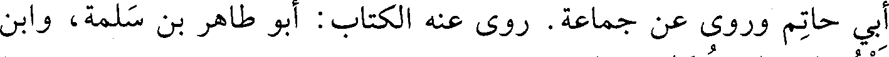
أبي حاتم، وروى عن جماعة. روى عنه الكتاب: أبو طاهر بن سلمة، وابن
File: 000405.gt.txt (if the image is defective, simply delete all Arabic text and the line will be excluded)
فنجويه، وابن تركان، وغيرهم.
File: 000406.gt.txt (if the image is defective, simply delete all Arabic text and the line will be excluded)
88 - محمد بن محمد الفياضي الهروي الإمام.
File: 000407.gt.txt (if the image is defective, simply delete all Arabic text and the line will be excluded)
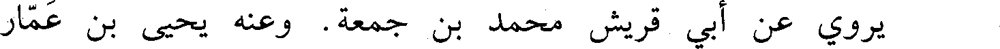
يروي عن أبي قريش محمد بن جمعة. وعنه يحيى بن عمار
File: 000408.gt.txt (if the image is defective, simply delete all Arabic text and the line will be excluded)
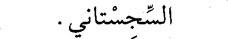
السجستاني.
File: 000409.gt.txt (if the image is defective, simply delete all Arabic text and the line will be excluded)
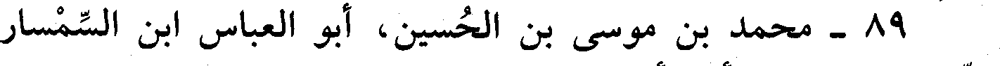
89 - محمد بن موسى بن الحسين، أبو العباس ابن السمسار
File: 000410.gt.txt (if the image is defective, simply delete all Arabic text and the line will be excluded)
الدمشقي الحافظ، أخو أبي الحسن علي.
File: 000411.gt.txt (if the image is defective, simply delete all Arabic text and the line will be excluded)
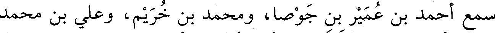
سمع أحمد بن عمير بن جوصا، ومحمد بن خريم، وعلي بن محمد
File: 000412.gt.txt (if the image is defective, simply delete all Arabic text and the line will be excluded)
ابن كاس، وأبا الجهم بن طلاب، وأبا الدحداح أحمد بن محمد، وعبدالله
File: 000413.gt.txt (if the image is defective, simply delete all Arabic text and the line will be excluded)
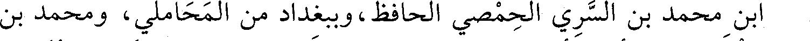
بن محمد بن السري الحمصي الحافظ، وببغداد من المحاملي، ومحمد بن
File: 000414.gt.txt (if the image is defective, simply delete all Arabic text and the line will be excluded)
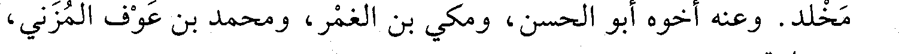
مخلد. وعنه أخوه أبو الحسن، ومكي بن الغمر، ومحمد بن عوف المزني،
File: 000415.gt.txt (if the image is defective, simply delete all Arabic text and the line will be excluded)
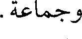
وجماعة.
File: 000416.gt.txt (if the image is defective, simply delete all Arabic text and the line will be excluded)
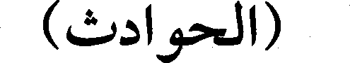
(الحوادث)
File: 000417.gt.txt (if the image is defective, simply delete all Arabic text and the line will be excluded)
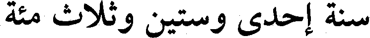
سنة إحدى ستين وثلاث مئة
File: 000418.gt.txt (if the image is defective, simply delete all Arabic text and the line will be excluded)
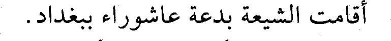
أقامت الشيعة بدعة عاشوراء ببغداد.
File: 000419.gt.txt (if the image is defective, simply delete all Arabic text and the line will be excluded)
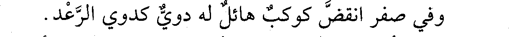
وفي صفر انقض كوكب هائل له دوي كدوي الرعد.
To Save: `Ctrl+s`, make sure to choose `Webpage, complete`!